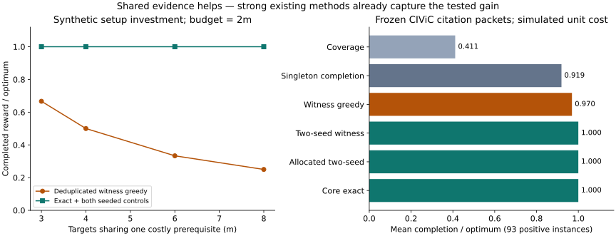

DNHacks · Algorithmic research · September 2026
We proved an exact result for declared evidence completion and found a sharp greedy failure. The exact method is a specialization of known Set-Union Knapsack. Strong existing controls matched it on every historical packet tested.
Recommendation: retain delivery coverage greedy; use the exact solver as a small-packet certificate. No novelty, biological truth, or forecasting improvement is claimed.
One setup costs m. Each of m follow-up actions costs 1 and completes reward m. Another 2m independent actions each cost 1 and earn 1. Every policy gets budget 2m and pays for shared work once.
Each unstarted target has density m/(m+1), below the distractors' density 1.
Pay for setup, then finish every target. The shared core has just one action.
Slider values come from the proved family, not new live experiments. Measured full-baseline cases are m = 3, 4, 6, 8. Both seeded controls solve this family; it does not show exact superiority over them.
January 2018 CIViC supplies 192 contexts with multiple publications. Every context gets one fixed pair of citations. We group all contexts into 32 small packets and simulate unit source-acquisition costs. Future labels are never loaded.
| Policy | Mean completion / optimum |
|---|---|
| Coverage | 0.411111 |
| Singleton completion | 0.919355 |
| Witness greedy | 0.969534 |
| Two-seed witness | 1.000000 |
| Allocated two-seed | 1.000000 |
| Core exact | 1.000000 |
Means use 93 positive-optimum instances. Both seeded controls match exact in every case. Coverage optimizes different facets; its lower completion score is not a failure of its coverage guarantee. Distinct citations do not certify independent experiments or biological truth.
On the m=32 family, an ordering that postpones setup solves one profile and reports [64, 1024]. It admits unresolved optimization. A second solve reaches [1024, 1024]. Verified-bound ordering already solves the useful profile first.
These are planning-computation counts. All core bounds are built upfront; no experimental-query savings were proved.

Full proofs and model · Closest prior art · Independent review · Historical results · Export figure
{kind=link}